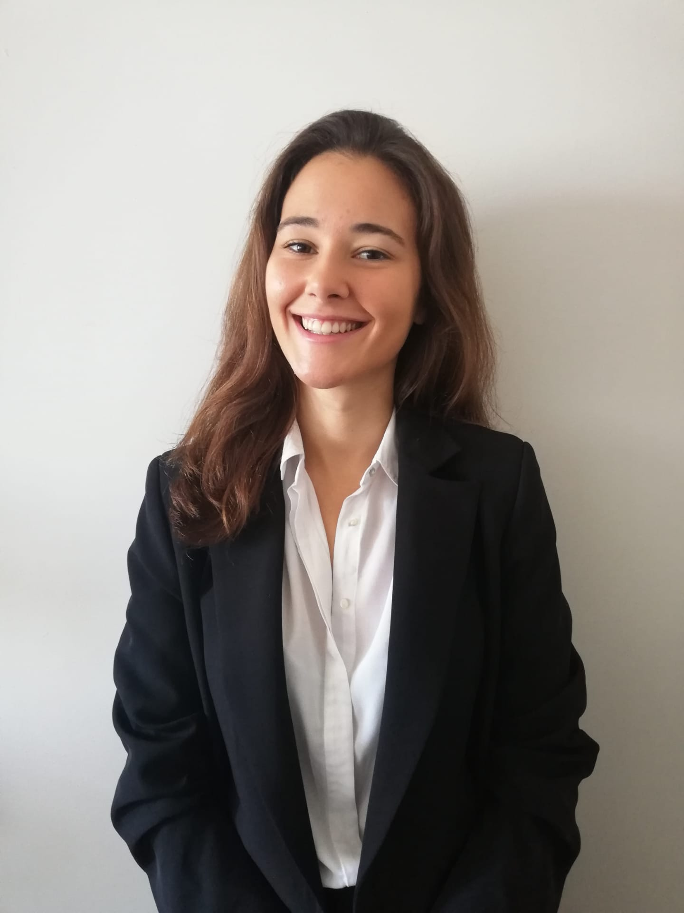

Inês Monteiro
Product Owner

Summary
Results-oriented Product Owner with 3 years' expertise. Proven in leading
cross-functional teams for innovative, customer-centric product
development. Effective communicator, adept at aligning business goals with
successful product strategies.
Work Experience
Prodct Owner at Vortal, Lisbon
June 2023 - Present
-
Delivered 3 different features using ChatGPT, that increased the return
rate of customers and the revenew by XX%
-
Led a team and was responsible for the delivery of more than XX
requiremnts by listening to Stakeholders and writting User Stories.
-
Was the Scrum Master of the same team I was Product Owner to, and
developed new ways to improve the Agile methodology whithin the Team.
Prodct Owner at Whyze Health, Dublin
April 2021 - May 2023
-
Led a development team to create a Platform with 3 different products
for the Health Sector and Clinical Trials.
-
Set realistic expectations regarding development and timeline, always
using an Agile Methodology.
- Created & implemented SCRUM processes in the company.
-
Conducted market research and competitor analysis to inform product
manager and stakeholders.
Front Office Ager at Hotel Tivoli Avenda Liberdade, Lisbon
June 2019 - November 2020
- Created an Excel sheet to help teammates to visualize the entire Hotel with a simple click.
- Effectively used task management skills to complete all front desk operations in a timely manner.
- Worked with Customer Service department to enhance overall customer experience.
Education
Bachelor of Hotel Management, Estoril Higher Institute for Tourism and Hotel Studies
2016 - 2019
- Gathered knowledge of Economics, Marketing and Finances.
Skills
- User Stories Writting
- Customer Interviews
- Figma, Miro, DevOps and other management and UI/UX tools
- Analytical Thinking
- Team Work